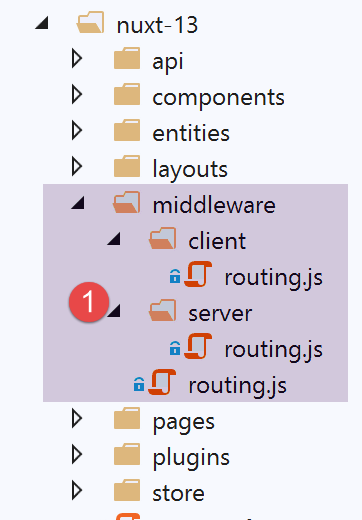

16. Esempio [nuxt-13]: Verifica della navigazione di [nuxt-12]
In questo esempio, ci concentriamo sulla navigazione di [nuxt-12]. Non l'abbiamo fatto in [nuxt-12] perché controllare la navigazione avrebbe aggiunto complessità a un esempio già complesso.
Obiettivo: vogliamo che l'utente possa eseguire solo azioni autorizzate:
- se la sessione JSON non è stata avviata, è consentito solo l'URL [/];
- se la sessione JSON è stata avviata ma l'utente non è autenticato, allora è consentito solo l'URL [/authentication];
- se la sessione JSON è stata avviata e l'utente è autenticato, sono consentiti solo gli URL [/get-admindata, /end-session];
- quando la destinazione di routing corrente non è autorizzata, verrà eseguito un reindirizzamento a un URL autorizzato;
L'esempio [nuxt-13] si ottiene inizialmente copiando l'esempio [nuxt-12]:

Le modifiche verranno apportate nella cartella di routing [middleware].
16.1. Routing per l'applicazione [nuxt]
Il routing dell'applicazione è configurato come segue nel file [nuxt.config]:
// router
router: {
// application URL root
base: '/nuxt-13/',
// routing middleware
middleware: ['routing']
},
- riga 6: il routing dell'applicazione è controllato dal file [middleware/routing];
Il file [middleware/routing] è il seguente:
/* eslint-disable no-console */
// on importe les middleware du serveur et du client
import serverRouting from './server/routing'
import clientRouting from './client/routing'
export default function(context) {
// qui exécute ce code ?
console.log('[middleware], process.server', process.server, ', process.client=', process.client)
if (process.server) {
// routage serveur
serverRouting(context)
} else {
// routage client
clientRouting(context)
}
}
- righe 10–16: il routing client e server [nuxt] viene gestito in modo diverso. Questo è un punto di differenza fondamentale tra i due;
- riga 4: il routing server è implementato dallo script [middleware/server/routing];
- riga 5: il routing client è implementato dallo script [middleware/client/routing];
16.2. Routing client [nuxt]
Il routing lato client [nuxt] rimane lo stesso di [nuxt-12]:
/* eslint-disable no-console */
export default function(context) {
// who executes this code?
console.log('[middleware client], process.server', process.server, ', process.client=', process.client)
// management of the PHP session cookie in the browser
// the browser's PHP session cookie must be identical to the one found in the nuxt session
// acion [fin-session] receives a new cookie PHP (server as nuxt client)
// if the server receives it, the client must pass it on to the browser
// for its own exchanges with the PHP server
// this is customer routing
// retrieve the session cookie PHP
const phpSessionCookie = context.store.state.phpSessionCookie
if (phpSessionCookie) {
// if it exists, we assign the PHP session cookie to the browser
document.cookie = phpSessionCookie
}
...
}
Per impedire al client di accedere a percorsi non autorizzati, limiteremo semplicemente l'offerta nel menu di navigazione del client ai soli percorsi autorizzati. Il componente [components/navigation] diventa il seguente:
<template>
<!-- bootstrap menu with three options -->
<b-nav vertical>
<b-nav-item v-if="$store.state.jsonSessionStarted && !$store.state.userAuthenticated" to="/authentification" exact exact-active-class="active">
Authentification
</b-nav-item>
<b-nav-item
v-if="$store.state.jsonSessionStarted && $store.state.userAuthenticated && !$store.state.adminData"
to="/get-admindata"
exact
exact-active-class="active"
>
Requête AdminData
</b-nav-item>
<b-nav-item v-if="$store.state.jsonSessionStarted && $store.state.userAuthenticated" to="/fin-session" exact exact-active-class="active">
Fin session impôt
</b-nav-item>
</b-nav>
</template>
- riga 4: l'opzione [Authentication] è disponibile solo se la sessione JSON è stata avviata ma l'utente non è autenticato. Se la sessione JSON non è stata avviata o l'utente è già autenticato, l'opzione non è disponibile;
- Righe 7–11: l'opzione [AdminData Request] è disponibile solo se la sessione JSON è stata avviata, l'utente è autenticato e i dati [AdminData] non sono ancora stati recuperati. Se una qualsiasi di queste tre condizioni non è soddisfatta (sessione JSON non avviata, utente non autenticato o dati [AdminData] già recuperati), l'opzione non viene offerta;
- riga 15: l'opzione [End Tax Session] è disponibile non appena la sessione JSON è stata avviata e l'utente è autenticato; in caso contrario, non è disponibile;
16.3. Routing del server [Nuxt]
Il routing del server è generalmente più complesso del routing lato client perché l'utente può digitare qualsiasi URL nella barra degli indirizzi del proprio browser. Possiamo lasciare che ciò accada (dopotutto, l'utente non dovrebbe farlo) o cercare di controllarlo. È quello che faremo qui, ai fini di questo esempio, perché nel caso dell'applicazione [nuxt-12], possiamo facilmente farne a meno poiché il server di calcolo delle imposte è ben protetto contro questi URL inseriti manualmente e sa come inviare i messaggi di errore appropriati. Lo abbiamo visto in [next-12], dove non c'era alcun controllo del routing.
Il routing su un server [nuxt] è molto diverso da quello su un client [nuxt] in termini di reindirizzamento:
- quando un server [nuxt] viene reindirizzato, invia una richiesta di reindirizzamento al browser del client con la destinazione del reindirizzamento. Il browser effettua quindi una nuova richiesta al server [nuxt], chiedendo la destinazione che gli è stata inviata. È come se l'utente avesse digitato manualmente l'URL della destinazione del reindirizzamento: l'intera applicazione [nuxt] si riavvia e, con essa, il suo intero ciclo di vita (plugin del server, store, routing del server, pagine);
- quando un client [nuxt] viene reindirizzato, nulla di tutto ciò accade. C'è semplicemente un cambio di pagina, lo stesso che si sarebbe verificato se l'utente avesse cliccato su un link che porta alla destinazione del reindirizzamento. Il ciclo di vita è quindi diverso (routing lato client, rendering della destinazione del percorso);
Per questo motivo, è preferibile separare il routing lato client da quello lato server, anche se i due codici possono sembrare simili.
Lo script di routing lato server [middleware/server/routing] sarà il seguente:
/* eslint-disable no-console */
export default function(context) {
// qui exécute ce code ?
console.log('[middleware server], process.server', process.server, ', process.client=', process.client)
// on récupère quelques informations dans le store [nuxt]
const store = context.store
// d'où vient-on ?
const from = store.state.from || 'nowhere'
...
}
- Nel routing lato client, la funzione di routing riceve il contesto [context] con la proprietà [context.from], che rappresenta il percorso della pagina da cui proveniamo. Il percorso verso cui ci stiamo dirigendo viene ottenuto tramite [context.route];
- Nel routing lato server, la funzione di routing riceve il contesto [context] senza la proprietà [context.from]. Il routing lato server avviene solo quando un URL viene richiesto manualmente dal server [nuxt]. Sappiamo che l’intera applicazione [nuxt] viene quindi resettata. È come se partissimo da zero, quindi non esiste il concetto di “pagina precedente”;
- grazie alla sessione [nuxt], sappiamo che il server può recuperare questa sessione ed evitare così di ripartire da zero. È quindi in questa sessione [nuxt], e più specificamente nello store della sessione, che memorizzeremo il nome dell’ultima pagina visualizzata dal browser del client prima che venga richiesta una URL al server [nuxt];
- Righe 7–9: Recuperiamo il nome dell'ultima pagina visualizzata dal browser del client. All'avvio dell'applicazione, questa informazione [da] non esiste nello store. Assegniamo quindi il nome [nowhere] alla variabile [da];
Affinché il server [nuxt] possa recuperare dallo store il nome dell'ultima pagina visualizzata dal browser del client, anche il client [nuxt] deve inserire questa informazione nello store. Lo script di routing del client [nuxt] viene quindi completato come segue:
/* eslint-disable no-console */
export default function(context) {
// qui exécute ce code ?
console.log('[middleware client], process.server', process.server, ', process.client=', process.client)
// gestion du cookie de la session PHP dans le navigateur
// le cookie de la session PHP du navigateur doit être identique à celui trouvé en session nuxt
// l'acion [fin-session] reçoit un nouveau cookie PHP (serveur comme client nuxt)
// si c'est le serveur qui le reçoit, le client doit le transmettre au navigateur
// pour ses propres échanges avec le serveur PHP
// on est ici dans un routing client
// on récupère le cookie de la session PHP
const phpSessionCookie = context.store.state.phpSessionCookie
if (phpSessionCookie) {
// s'il existe, on affecte le cookie de session PHP au navigateur
document.cookie = phpSessionCookie
}
// on met dans la session le nom de la page où on va - pas de redirection serveur
context.store.commit('replace', { serverRedirection: false, from: context.route.name })
// on sauvegarde le store dans la session [nuxt]
const session = context.app.$session()
session.value.store = context.store.state
session.save(context)
}
- Vengono aggiunte le righe 19–24;
- Riga 20: memorizziamo il nome della pagina [context.route.name] che verrà visualizzata nello store, che fungerà poi da pagina di provenienza durante il successivo passaggio di routing. Inoltre, vedremo che nel routing del server [nuxt], è necessario sapere se il routing corrente deriva da un precedente reindirizzamento da parte del server [nuxt]. In questo caso non è così, quindi impostiamo la proprietà [serverRedirection] su [false];
- righe 22–24: lo stato dello store viene inserito nella sessione [nuxt] (riga 23), quindi la sessione [nuxt] viene salvata in un cookie (riga 24), che a sua volta verrà salvato nel browser del client [nuxt];
Torniamo allo script di routing del server [nuxt]:
/* eslint-disable no-console */
export default function(context) {
// qui exécute ce code ?
console.log('[middleware server], process.server', process.server, ', process.client=', process.client)
// on récupère quelques informations dans le store [nuxt]
const store = context.store
// d'où vient-on ?
const from = store.state.from || 'nowhere'
// où va-t-on ?
const to = context.route.name
// éventuelle redirection
let redirection = ''
// gestion du routage terminé
let done = false
// est-on déjà dans une redirection du serveur [nuxt]?
if (store.state.serverRedirection) {
// rien à faire
done = true
}
// est-ce un rechargement de page ?
if (to === from) {
// rien à faire
done = true
}
// contrôle de la navigation du serveur [nuxt]
// on s'inspire de la navigation client dans le composant [navigation]
// cas où la session PHP n'a pas démarré
if (!done && !store.state.jsonSessionStarted && to !== 'index') {
// redirection
redirection = 'index'
// travail terminé
done = true
}
// cas où l'utilisateur n'est pas authentifié
if (!done && store.state.jsonSessionStarted && !store.state.userAuthenticated && to !== 'authentification') {
// redirection
redirection = from
// travail terminé
done = true
}
// cas où l'utilisateur a été authentifié
if (!done && store.state.jsonSessionStarted && store.state.userAuthenticated && to !== 'get-admindata' && to !== 'fin-session') {
// on reste sur la même page
redirection = from
// travail terminé
done = true
}
// cas où [adminData] a été obtenu
if (!done && store.state.jsonSessionStarted && store.state.userAuthenticated && store.state.adminData && to !== 'fin-session') {
// on reste sur la même page
redirection = from
// travail terminé
done = true
}
// on a fait tous les contrôles ---------------------
// redirection ?
if (redirection) {
// on note la redirection dans le store
store.commit('replace', { serverRedirection: true })
} else {
// pas de redirection
store.commit('replace', { serverRedirection: false, from: to })
}
// on sauvegarde le store dans la session [nuxt]
const session = context.app.$session()
session.value.store = store.state
session.save(context)
// on fait l'éventuelle redirection
if (redirection) {
context.redirect({ name: redirection })
}
}
- righe 6–9: recupera il valore di [from] dall'archivio del server [nuxt];
- riga 11: prendiamo nota della destinazione del percorso corrente;
- riga 13: il routing può comportare un reindirizzamento del browser del client. [redirection] sarà la destinazione di questo reindirizzamento;
- riga 15: [done] impostato su [true] indica che il routing è completato;
- righe 17–21: Innanzitutto, verifichiamo se l'attuale routing è il risultato di una richiesta di reindirizzamento inviata al browser del client. Questa informazione è memorizzata nella proprietà [serverRedirection] dello store. Se questa proprietà è vera, allora il server [nuxt] ha inviato un reindirizzamento al browser del client durante la precedente richiesta al server [nuxt]. In questo caso, non è richiesto alcun routing. Durante la richiesta precedente, il router del server [nuxt] ha deciso che il browser del client doveva essere reindirizzato. Questa decisione non deve essere sovrascritta da un nuovo routing;
- righe 23–27: verifichiamo se il routing corrente è un ricaricamento della pagina. In tal caso, lo lasciamo procedere;
- A partire dalla riga 29, riprendiamo le regole applicate nel componente [navigation] del client [nuxt] (vedi paragrafo precedente);
- righe 32–38: gestiamo il caso in cui la sessione JSON non sia stata avviata e la destinazione del routing non sia la pagina [index]. In questo caso, reindirizziamo il browser del client alla pagina [index];
- righe 40–46: gestiamo il caso in cui la sessione JSON sia stata avviata, l'utente non sia autenticato e la destinazione di routing corrente non sia la pagina [authentication]. In questo caso, rifiutiamo il routing e restiamo dove eravamo;
- righe 48–54: gestiscono il caso in cui la sessione JSON sia iniziata, l'utente sia autenticato e la destinazione di routing corrente non sia né la pagina [get-admindata] né la pagina [end-session], che sono quindi le uniche destinazioni possibili. In questo caso, il routing richiesto viene rifiutato e torniamo dove eravamo prima;
- righe 56–62: gestiamo il caso in cui [adminData] sia stato ottenuto. In questo caso, c'è un solo possibile obiettivo di routing: la pagina [fin-session]. Se quella non era la pagina richiesta, rifiutiamo il routing e torniamo dove eravamo prima;
- righe 64–72: se si è verificato un reindirizzamento, lo registriamo nello store del server [nuxt]: [serverRedirection: true]. Si noti che non assegniamo un valore alla proprietà [from] dello store. Il motivo è che ci sarà un reindirizzamento dal browser del client e abbiamo visto che in questo caso non c'era alcun routing (righe 17–20) e la proprietà [from] dello store non viene utilizzata;
- Righe 66–69: se non c'è reindirizzamento, questo viene annotato anche nello store [nuxt] del server: [serverRedirection: false]. Inoltre, il routing corrente visualizzerà la pagina [to], che per la richiesta successiva (client o server [nuxt]) diventerà la pagina precedente. Questo è il motivo per cui scriviamo [from: to];
- righe 73–76: salviamo lo store nella sessione [nuxt], che a sua volta viene salvata in un cookie;
- righe 77–80: se [redirection] non è vuoto, allora istruiamo il browser a reindirizzare. Altrimenti (non mostrato qui), il ciclo di vita del server [nuxt] continuerà: la pagina [to] verrà elaborata dal server [nuxt] e inviata al browser del client [nuxt] insieme al cookie di sessione [nuxt];
Il routing scelto qui per il server [nuxt] è arbitrario. Avremmo potuto sceglierne un altro o, come accennato, non utilizzare affatto il routing. Quello scelto sopra ha il vantaggio di mantenere sempre l'applicazione in uno stato stabile indipendentemente dall'URL richiesto dall'utente.
Possiamo migliorare leggermente questo comportamento quando la pagina che viene caricata alla fine è la pagina originale. Ci sono due casi:
- l'utente ha attivato un ricaricamento della pagina (to===from);
- ci sono reindirizzamenti alla pagina originale (redirection===from);
In entrambi i casi, la pagina originale verrà eseguita nuovamente con la sua chiamata asincrona al server di calcolo delle imposte. Facciamo un esempio. Se, una volta autenticato, l'utente ricarica la pagina (F5). In questo caso, nel routing sopra riportato, abbiamo: [to]=[from]=[authentication]. Non c'è alcun reindirizzamento. La pagina [to=authentication] verrà eseguita dal server [nuxt]. Se non facciamo nulla, la funzione [asyncData] verrà eseguita nuovamente. Ciò non è necessario poiché l'autenticazione è già stata eseguita.
Possiamo migliorare questo comportamento modificando leggermente la pagina [authentication]:
// asynchronous data
async asyncData(context) {
// log
console.log('[authentification asyncData started]')
// don't do things twice if the page has already been requested
if (process.server && context.store.state.userAuthenticated) {
console.log('[authentification asyncData canceled]')
return { result: '[succès]' }
}
// customer [nuxt]
if (process.client) {
// start waiting
context.app.$eventBus().$emit('loading', true)
// no error
context.app.$eventBus().$emit('errorLoading', false)
}
try {
// authenticate to the server
...
- righe 6-9: se la pagina viene servita dal server [nuxt] e nello store riscontriamo che l'autenticazione è già stata eseguita, restituiamo direttamente il risultato desiderato (riga 8);
Facciamo lo stesso per tutte le pagine:
Pagina [index]:
// asynchronous data
async asyncData(context) {
// log
console.log('[index asyncData started]')
// don't do things twice if the page has already been requested
if (process.server && context.store.state.jsonSessionStarted) {
console.log('[index asyncData canceled]')
return { result: '[succès]' }
}
try {
...
Pagina [get-admindata]
// asynchronous data
async asyncData(context) {
// log
console.log('[get-admindata asyncData started]')
// don't do things twice if the page has already been requested
if (process.server && context.store.state.adminData) {
console.log('[get-admindata asyncData canceled]')
return { result: context.store.state.adminData }
}
// customer
if (process.client) {
// start waiting
context.app.$eventBus().$emit('loading', true)
// no error
context.app.$eventBus().$emit('errorLoading', false)
}
try {
...
Pagina [fine sessione]
// asynchronous data
async asyncData(context) {
// log
console.log('[fin-session asyncData started]')
// don't do things twice if the page has already been requested
if (process.server && context.store.state.jsonSessionStarted && !context.store.state.userAuthenticated) {
console.log('[fin-session asyncData canceled]')
return { result: "[succès]. La session jSON reste initialisée mais vous n'êtes plus authentifié(e)." }
}
// customer case [nuxt]
if (process.client) {
// start waiting
context.app.$eventBus().$emit('loading', true)
// no error
context.app.$eventBus().$emit('errorLoading', false)
}
try {
16.4. Esecuzione
Per eseguire questo esempio, assicurati di eliminare il cookie di sessione [nuxt] e il cookie PHP dal browser che esegue il client [nuxt] prima dell'esecuzione, in modo da partire da zero. Di seguito è riportato un esempio che utilizza il browser Chrome:

16.5. Conclusione
Il routing sul server [nuxt] è complesso perché è necessario anticipare ogni URL che l'utente potrebbe digitare manualmente. Questo è un esempio da manuale. Un'applicazione [nuxt] non è pensata per essere utilizzata in questo modo. Una volta che la pagina [index] viene servita dal router del server [nuxt], le successive richieste effettuate al server potrebbero essere reindirizzate a una pagina di errore.
Nel caso specifico del nostro esempio [nuxt-13], il routing del server [nuxt] non era necessario. Il comportamento predefinito (essenzialmente nessun routing) nell'esempio [nuxt-12] ha funzionato perfettamente.